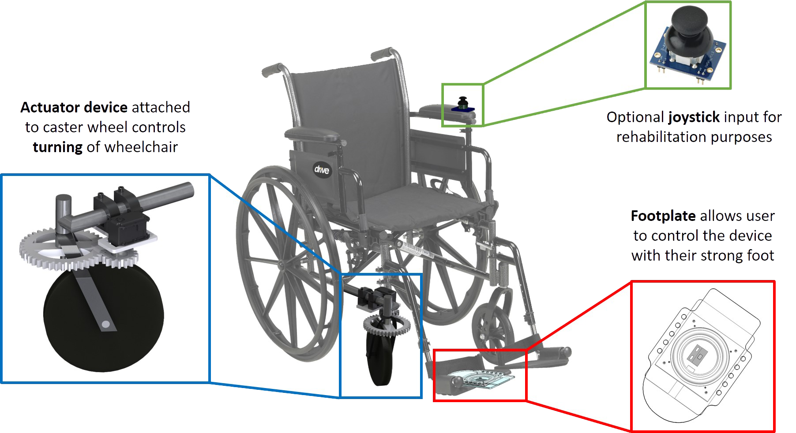

Allez
Background
A common condition that arises as a result of stroke is hemiplegia, weakness of one side of the body. Currently, there are limited mobility solutions for individuals with hemiplegia. Our goal was to create a solution to increase the independence of individuals with hemiplegia.
User/Market Research
We began our project by understanding the needs of our users and other stakeholders. Our team spoke with physical therapists, rehabilitation engineers, caretakers, and individuals with hemiplegia in order to first determine points of tension with current mobility solutions.
Currently, there are three main commercially available one arm wheelchair drives that require some level of strength and dexterity. Additionally, these products either require purchasing a new wheelchair or retrofitting an existing manual chair.
Research Findings
Currently mobility options for individuals with hemiplegia include:
- Propel manual wheelchair with strong arm and steer with foot
- Propel and steer manual wheelchair with strong foot
- Use commercially available one arm wheelchair drives that are not recommended by physical therapists
Additionally, from our research into existing commercially available one arm drives, we were able to understand that only one of the front caster wheels is needed to steer the direction of the wheelchair.
Prototyping
1) For our first iteration, we tried implementing a mechanical solution: integrating a footplate that attached directly to the front caster wheel. However, when we tested our first prototype, we learned that we needed significantly more force to keep the wheel pointed in the desired direction.
2) For our second iteration, we increased the fidelity of our prototype and moved to an electromechanical solution with an actuator assembly coupled to the front caster wheel. We did some calculations as to how much force was needed to turn the wheel on a high friction surface in order to size our servo. To more easily troubleshoot our prototype, we opted to simplify our footplate mechanism by implementing a joystick instead.


3) Based on our testing, we found that we needed a stronger servo. Due to the angled design of the caster fork, the caster wheel flipped 180 degrees when a user moved backwards. This “flip” made it very difficult to calibrate direction input to actuator movement. For our third iteration, we implemented our footplate mechanism and rebuilt our actuator assembly using a stronger servo.
How it works: A user rotates the electromechanical footplate with their strong foot to indicate the direction they want the chair to go. A Hall effect sensor in the footplate reads the position of the rotated plates; there is a change in magnetic field when the magnet rotates with respect to the sensor, which is stationary on the bottom footplate. An Arduino then translates that rotation into a desired position for an actuator assembly that is coupled to the front caster wheel.
User Testing
In collaboration with Rancho Los Amigos National Rehabilitation Center in Downey, CA, my team was able to test our prototype with recovering stroke patients and physical therapists. We integrated their feedback regarding the usage of the footplate mechanism prior to presenting at the RESNA conference.
Final Deliverables
In May 2016, our one arm wheelchair drive was selected as one of six finalist projects from over 90 submissions to the RESNA Student Design Competition! My team presented our project at the RESNA Conference and Developer’s Forum in Washington DC in July 2016.
After the competition, all the RESNA Student Design Competition finalists, wanted to see how many engineers and occupational therapists could fit into an elevator selfie. The answer: 13, with room to spare!